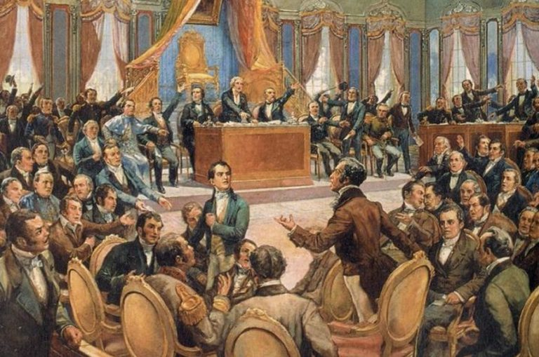
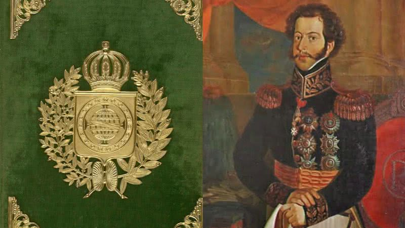

Linha do Tempo
1810 1820 1830 1840 1850 1860 1870 18801810
N.º1
4 de dezembro de 2024, São Paulo
século XIX
1810
"O Tráfico e a Abertura dos Portos"
Oferecido pela Revista do Tempo
Tráfico - 1807

Em 2 de março de 1807, o Reino Unido aprovou a abolição do comércio de escravos em suas colônias, seguindo o exemplo da Dinamarca, que já havia adotado essa medida três anos antes. A nova legislação britânica visava erradicar o tráfico de escravos africanos e americanos, com a Inglaterra até patrulhando os mares para fiscalizar navios suspeitos de transportar escravos.
Apesar de o Reino Unido ser o principal responsável pelo tráfico, outros países europeus, como França, Espanha e Portugal, também estavam envolvidos na prática.
Portos - 1808
A abertura dos portos aconteceu no dia 28 de janeiro de 1808, por um decreto real emitido pelo príncipe regente d. João. Esse decreto determinou a abertura dos portos brasileiros para as nações amigas de Portugal, o que encerrou séculos de existência do pacto colonial. A abertura dos portos possibilitou que o mercado brasileiro fosse tomado por mercadorias inglesas.
A chegada da família real portuguesa ao Brasil em 1808 marcou o início do Período Joanino, que durou até 1822. Esse evento foi causado pela disputa entre franceses e ingleses na Europa. Em 1806, os franceses proibiram o comércio europeu com a Inglaterra, complicando a posição de Portugal, pois D. João não queria desagradar ninguém. Quando Napoleão invadiu Portugal em 1807, D. João transferiu a Corte para o Brasil com a escolta inglesa, que garantia segurança e reconhecimento da família Bragança. O Brasil deixou de ser colônia naquele momento, sob o ponto de vista econômico.
1820
N.º1
4 de dezembro de 2024, São Paulo
século XIX
1820
"A Independência, a Constituição e o Tratado de 1826"
Oferecido pela Revista do Tempo
Independência do Brasil - 1822
O Brasil foi declarado independente de Portugal por Ipiranga em 7 de setembro de 1822, após se tornar uma monarquia sob D. Pedro I. Com a independência, o Brasil deixou de ser uma colônia portuguesa e se tornou uma nação independente.
Esse processo está ligado à transferência da corte portuguesa para o Brasil em 1808, quando a família real fugiu das tropas de Napoleão. Durante esse período, ocorreram mudanças significativas, como a abertura dos portos, que permitiu comércio com outras nações. Isso teve impacto nas relações entre a elite brasileira e Portugal, criando um ambiente propício para a independência. D. João VI promoveu desenvolvimento cultural e envolveu-se em disputas territoriais. Em 1815, o Brasil foi elevado a reino, refletindo suas transformações políticas e sociais.
A independência do Brasil aconteceu quando uma elite percebeu que os portugueses queriam restabelecer os laços coloniais, tornando a relação insustentável. O separatismo surgiu como uma alternativa, especialmente após as medidas impopulares das Cortes de Portugal, que desrespeitaram os representantes brasileiros. Em resposta, foi criado o Clube da Resistência, que apoiou a permanência do príncipe no Brasil e ajudou a consolidar a ideia de independência. Em 9 de janeiro de 1822, Dom Pedro desafiou as Cortes e decidiu ficar no país. A situação se agravou com o Cumpra-se em maio de 1822, que deu a Dom Pedro poder sobre as leis de Portugal no Brasil, e em junho, uma Assembleia Constituinte foi convocada, com influência de Dona Maria Leopoldina e José Bonifácio na nova Constituição.
Declaração de Independência - 1822
Em agosto de 1822, a relação entre Brasil e Portugal piorou. As Cortes portuguesas atacaram os "privilégios brasileiros", acusaram José Bonifácio de traição e ordenaram que Dom Pedro voltasse a Portugal. Isso gerou revolta e Dona Maria Leopoldina convocou uma reunião no dia 2 de setembro, presidida por José Bonifácio. Nela, decidiram declarar a independência do Brasil. A declaração foi enviada a Dom Pedro, que a recebeu enquanto viajava para São Paulo. Em 7 de setembro de 1822, ele declarou a independência do Brasil, no evento conhecido como Grito do Ipiranga. Isso simbolizou o rompimento com Portugal e o início da independência brasileira.
Com a independência do Brasil, o país se tornou soberano e adotou uma monarquia, sendo o único Estado monárquico da América do Sul. Dom Pedro foi coroado imperador do Brasil em 1º de dezembro de 1822, iniciando o Primeiro Reinado até 1831. A independência trouxe endividamento, pois Portugal exigiu indenização de dois milhões de libras, gerando instabilidade econômica e política.
Assembleia Constituinte - 1823
A primeira eleição do Brasil escolheu a Assembleia Constituinte, que ia criar a primeira Constituição do país. A eleição foi pelo voto indireto e selecionou 100 deputados de todas as províncias, mas somente pessoas da elite econômica e intelectual participaram, como bacharéis, padres, magistrados, proprietários de terras, funcionários públicos, militares e médicos. A Constituinte começou a trabalhar em 3 de maio de 1823, no Rio de Janeiro, e o projeto da Constituição limitava o poder do imperador e proibia portugueses de ocuparem cargos políticos. Em 12 de novembro de 1823, D. Pedro I encerrou a Assembleia com tropas, porque não aceitou essas limitações, e alguns deputados tiveram que deixar o país. Isso foi chamado de Noite da Agonia.
Constituição - 1824
“uma Constituição, em que os três Poderes sejam bem divididos de forma; que não possam arrogar direitos, que lhe não compitam, mas que sejam de tal modo organizados, e harmonizados, que se lhes torne impossível, ainda pelo decurso do tempo, fazerem-se inimigos, e cada vai mais concorram de mãos dadas para a felicidade geral do Estado. (...) Espero que a Constituição, que façais, mereça a Minha Imperial Aceitação, seja tão sábia, e tão justa, quanto apropriada à localidade, e civilização do Povo Brasileiro (...).”
Foi assim que Dom Pedro I, após a proclamação da independência e da aclamação do mesmo como imperador do Brasil, pronunciou durante a abertura dos trabalhos da Constituinte lembrando os deputados o que precisavam fazer. O país precisava organizar sua estrutura política e administrativa. Para isso, foi reunida a Assembleia Nacional Constituinte com deputados vindos de diversas províncias do Brasil.
A Constituição de 1824, outorgada em 25 de março de 1824, foi a primeira do Brasil e criada para atender aos interesses do imperador Dom Pedro I. Redigida por um pequeno conselho, surgiu após a rejeição da proposta pela Assembleia Constituinte. Essa Constituição garantiu a unidade territorial, dividiu o governo em quatro poderes e estabeleceu o voto censitário, vinculado à renda. O texto foi elaborado durante o processo de independência do Brasil, que ocorreu em 7 de setembro de 1822, devido a conflitos entre as Cortes portuguesas e as elites brasileiras. A pressão para convocar uma Assembleia Constituinte cresceu, e Dom Pedro aceitou, reconhecendo a necessidade de não governar sozinho.
A Constituição de 1824 estabeleceu que o Brasil era uma monarquia constitucional, com províncias e presidentes nomeados pelo imperador. As eleições eram indiretas e o voto limitado àqueles com renda mínima. O catolicismo era a religião oficial, subordinada ao Estado. A escravidão foi mantida e criou-se o Conselho de Estado, além de quatro poderes: Executivo, Legislativo, Judiciário e Moderador, o último exercido pelo imperador. Essa Constituição durou 65 anos, sendo a mais longa da história do Brasil.
Tratado Brasil-Grã-Bretanha - 1826
Em 1826, o Império do Brasil e o governo britânico assinaram um documento que estendia a proibição do tráfico a todos os navios negreiros da África. Esses acordos não eram totalmente respeitados pelo Império, e o tráfico continuou sem a repressão do governo imperial.
- O tratado afirmou que, a partir de março de 1830, o comércio de escravos africanos seria ilegal para os súditos do imperador brasileiro.
- A atividade seria considerada pirataria.
Diante do não cumprimento dos tratados pelo Império e com a alegação de que era impossível fiscalizar todo o nosso litoral, o governo britânico propôs novos acordos que autorizavam a marinha britânica a apreender em águas internacionais navios de bandeira brasileira utilizados no tráfico. Esse acordo foi muito contestado no Brasil, principalmente depois da primeira apreensão de navio brasileiro pelos ingleses. Na realidade, isso representava desrespeito à soberania brasileira.
1830
N.º1
4 de dezembro de 2024, São Paulo
século XIX
1830
"O Código Criminal, o Fim do Tráfico e a Taxa do Café"
Oferecido pela Revista do Tempo
Código criminal - 1830
De 1603 a 1830, o Brasil aplicava penas brutais como açoites e mutilações. Após a Independência, Dom Pedro I possibilitou a criação de uma legislação mais humanitária, resultando no Código Criminal de 1830.
Esse código, influenciado pelos ideais iluministas, aboliu várias punições cruéis, mas ainda manteve a pena de morte, que só foi abolida por Dom Pedro II após um erro judiciário. A juíza Daniela de Freitas Marques destaca que, apesar de influenciado por modelos europeus, o Brasil ainda mantinha a escravidão e aplicava penas severas aos escravos. O Código de 1830 focava no crime, enquanto os códigos posteriores (1890 e 1940) passaram a concentrar-se na pena.
O Código Criminal fazia distinção entre os escravizados negros e os cidadãos livres na hora de ditar parte das punições, ainda que os crimes cometidos fossem os mesmos. Não havia a plena isonomia, isto é, a igualdade de todos perante a lei.
Fim do Tráfico Negreiro no Brasil - 1831
Em 7 de novembro de 1831, foi promulgada a Lei Feijó, a primeira legislação brasileira contra a escravidão. Criada pelo ministro da Justiça, padre Diogo Antônio Feijó, a lei proibia o tráfico transatlântico de escravos da África para o Brasil.
Embora tenha enfraquecido a estrutura oficial do comércio de escravos, ela não conseguiu erradicar a prática, levando ao crescimento de um sistema de contrabando. A pressão internacional, especialmente da Inglaterra, para abolir a escravidão, também contribuiu para a criação dessa lei.
A Lei Feijó, criada sob pressão da Inglaterra para acabar com o tráfico de escravos, foi ineficaz, sendo chamada de norma "para inglês ver". Apesar de proibir o tráfico, pelo menos 750 mil escravos continuaram sendo trazidos ilegalmente para o Brasil após sua promulgação. Segundo o pesquisador, autoridades e padres colaboravam para forjar documentos e legalizar escravos contrabandeados, dificultando a fiscalização e tornando quase impossível questionar sua origem irregular. Isso explicaria a baixa quantidade de processos de alforria bem-sucedidos baseados na Lei Feijó. Luiz Gama, conhecido por libertar judicialmente centenas de escravos, utilizou essa legislação em pelo menos 15 processos para argumentar em favor da liberdade.
Taxa do Café nos EUA - 1833
Dale Tomich, em sua obra de 25 anos atrás, desafiou a visão tradicional do século XIX como o "século da emancipação" ao introduzir o conceito de "Segunda Escravidão". Ele argumentou que a escravidão nas Américas estava profundamente integrada ao capitalismo global, com uma interconexão entre trabalho escravo e assalariado. Edward Baptist seguiu essa linha ao revisar a história dos EUA, destacando o papel central do capital financeiro e da escravidão no Sul, e usou a Segunda Escravidão para analisar o Brasil no contexto da economia global. Richard Graham comparou as economias escravistas do Brasil e dos EUA, destacando a vantagem do Sul dos EUA, devido à produção de algodão, essencial para a Revolução Industrial, enquanto o café brasileiro tinha menor impacto. No entanto, Graham não considerou a interconexão entre as economias, como a subordinação do café brasileiro à economia dos EUA e a articulação política entre as duas escravidões.
1840
N.º1
4 de dezembro de 2024, São Paulo
século XIX
1840
"A Tarifa de Alves Branco e o Bill Aberdeen"
Oferecido pela Revista do Tempo
Tarifa Alves Branco - 1844
Antes da independência, a economia brasileira já era marcada pela forte dependência dos produtos britânicos, especialmente após os tratados comerciais de 1810 entre Brasil e Inglaterra. Esses acordos facilitaram a entrada de mercadorias inglesas no país, impedindo o desenvolvimento da indústria nacional e criando uma relação de dependência com a indústria britânica.
Na segunda metade do século XIX, o Brasil enfrentava dificuldades econômicas, como os custos das revoltas internas, problemas no setor agrícola e as indenizações pela independência. Para lidar com esses problemas, entre 1828 e 1844, o governo brasileiro revisou sua política alfandegária. O ministro da Fazenda, Manuel Alves Branco, criou a Tarifa Alves Branco, que aumentou significativamente os impostos sobre mais de três mil produtos importados. As taxas variavam: se não houvesse concorrente nacional, o imposto era de 30%, e, caso houvesse produtos similares no país, a taxa poderia chegar a 60%.
Embora a Tarifa Alves Branco tenha aumentado a arrecadação e incentivado o crescimento da indústria brasileira, o simples efeito protecionista não foi suficiente para consolidar um processo de industrialização duradouro durante o Império.
Bill Aberdeen - 1845
Em 1845, o governo britânico decretou o Bill Aberdeen, permitindo que a marinha inglesa apreendesse navios negreiros em águas brasileiras e julgasse seus comandantes, em resposta à demora do Brasil em cumprir acordos para acabar com o tráfico de escravos. A medida causou pânico no Brasil, resultando paradoxalmente em um aumento no número e no preço dos escravos, já que traficantes intensificaram o comércio ilegal.
De acordo com Caio Prado Júnior, em 1846, 50.324 escravos foram desembarcados no Brasil, número que subiu para 60 mil em 1848. A marinha britânica passou a perseguir intensamente os navios, provocando confrontos, como no Paraná.
O Bill Aberdeen gerou um conflito político interno no Brasil, com os conservadores culpando os liberais pela pressão britânica. Os saquaremas defendiam que a abolição do tráfico deveria ser decidida pelo governo imperial, buscando preservar a soberania nacional. Em 1850, a pressão britânica aumentou, com a ameaça de guerra caso o Brasil não cedesse.
1850
N.º1
4 de dezembro de 2024, São Paulo
século XIX
1850
"A Lei Eusébio de Queirós e o Banco"
Oferecido pela Revista do Tempo
Eusébio de Queirós - 1850
A Lei Eusébio de Queirós, de 1867, foi uma medida tomada pelo Brasil em resposta à pressão internacional, especialmente da Inglaterra, para acabar com o tráfico negreiro, que existia desde o século XVI e foi responsável por trazer quase cinco milhões de africanos escravizados ao país. Embora o tráfico já estivesse em declínio no século XIX, a resistência à sua abolição era grande devido à dependência da mão de obra escravizada, especialmente no setor cafeeiro.
O envolvimento da Inglaterra com essa questão começou ainda quando o Brasil era colônia. Após a independência em 1822, o país se comprometeu, por meio de um tratado de 1825, a abolir o tráfico negreiro. A Lei Feijó, de 1831, foi uma tentativa de proibição definitiva, mas não foi efetivamente cumprida, sendo ignorada na prática. Durante esse período, o tráfico de africanos continuou ilegal, e entre 1831 e 1845, o número de africanos trazidos aumentou, especialmente para abastecer as plantações de café no Sudeste do Brasil.
A pressão inglesa, somada à crescente mobilização interna, levou à aprovação da Lei Eusébio de Queirós, que proibia o tráfico e estabelecia severas punições para os traficantes. Embora a lei tenha sido mais eficaz do que as anteriores, o tráfico ainda continuou de forma ilegal por algum tempo. A Lei Áurea, de 1888, foi o marco final na abolição da escravidão no Brasil.
Banco - 1853
Em 1853, o imperador D. Pedro II solicitou, em sua Fala do Trono, a criação urgente de um banco nacional para impulsionar a economia brasileira. O pedido foi rapidamente atendido pelo Parlamento e, em 5 de julho, foi criada a primeira versão do Banco do Brasil, a instituição bancária mais antiga do país. Naquela época, o sistema financeiro brasileiro era precário, com poucos bancos privados, e a maioria da população recorria a agiotas para obter crédito. Além disso, o governo dependia de bancos britânicos para financiamento.
A história bancária do Brasil começou em 1808, quando D. João VI, após chegar ao Brasil, fundou o primeiro Banco do Brasil. No entanto, devido à fuga de recursos para Portugal, o banco foi liquidado em 1829, durante o reinado de D. Pedro I. Em 1833, a Regência tentou criar um novo banco nacional, mas a proposta falhou devido à desconfiança dos investidores.

Somente em 1851, Irineu Evangelista de Sousa (futuro Barão de Mauá) fundou uma nova versão do Banco do Brasil, que se tornou a maior instituição bancária do Império e teve papel central na organização do sistema financeiro brasileiro. O Banco do Brasil, fundado por Mauá, foi um marco importante e um passo decisivo para o desenvolvimento do sistema bancário no país.
1860
N.º1
4 de dezembro de 2024, São Paulo
século XIX
1860
"A Guerra da Secessão, A Lei Hipotecária e a Lei dos Leilões"
Oferecido pela Revista do Tempo
Guerra da Secessão (EUA) - 1861
Entre 1861 e 1865, o Norte e Sul dos Estados Unidos travaram uma guerra: a Guerra de Secessão ou a Guerra Civil Americana. Motivada pelas diferenças existentes entre Norte e Sul dos Estados Unidos durante o século XIX, esse conflito trouxe grande destruição, sobretudo para o Sul do país, afetando diretamente sua economia e resultando em um saldo aproximado de 600 mil mortos.
Os estados do Norte eram caracterizados pelas pequenas propriedades agrícolas, o desenvolvimento manufatureiro e pela predominância do trabalho livre assalariado. O Sul, por sua vez, era caracterizado pela dependência do cultivo agrícola baseado na existência de um latifúndio, baseada na monocultura, em geral, de algodão e totalmente dependente do trabalho escravizado. A insatisfação sulista com as tentativas dos nortistas de abolir a escravidão levou muitos daquele lado a defenderem ideais de separatismo para manter seu estilo de vida. A vitória nas eleições presidenciais de Abraham Lincoln fez com que o Estado da Carolina do Sul declarasse sua secessão, ou seja, separação, em dezembro de 1860. Outros estados sulistas acompanharam essa decisão e os Estados Confederados da América se formaram.
As hostilidades tiveram início em 12 de abril de 1861, quando forças confederadas atacaram e conquistaram o Fort Sumter. Entretanto, em 28 de junho de 1865, derrotados no campo de batalha, os generais confederados se renderam. Assim, iniciou-se um período de reconstrução que durou até 1877, quando as tropas da União deixaram o Sul.
Lei Hipotecária - 1864
O Decreto nº 1.237, de 24 de setembro de 1864, conhecido como Lei Hipotecária, foi um marco legislativo no Brasil Imperial ao regulamentar o sistema de hipotecas no país.
A medida buscava organizar e padronizar o registro de garantias sobre imóveis, fortalecendo a segurança jurídica em transações de crédito imobiliário. Com regras claras para o registro de propriedades e direitos reais, a lei consolidou as bases para um mercado de crédito mais confiável, essencial para impulsionar a economia baseada em propriedades no período.
Lei dos Leilões - 1869
A Lei do Leilão de 1869 proibia as vendas de escravos em leilão público e a separação de casais e de escravizados com menos de 15 anos de suas mães. Essa lei foi uma das leis abolicionistas decretadas ao longo do século XIX para abolir gradualmente a escravidão no Brasil.
“ Art. 1º Todas as vendas de escravos debaixo de pregão e em exposição pública, ficam proibidas. Os leilões comerciais de escravos ficam proibidos, sob pena de nulidade de tais vendas e de multa de 100$000 a 300$000, contra o leiloeiro, por cada um escravo que vender em leilão. As praças judiciais em virtude de execuções por dívida, ou de partilha entre herdeiros, serão substituídas por propostas escriptas, que os juízes receberão dos arrematantes por espaço de 30 dias, anunciando os juízes por editais, contendo os nomes, idades, profissões, avaliações e mais característicos dos escravos que tenham de ser arrematados. Findo aquele prazo de 30 dias do anúncio judicial, o juiz poderá renovar o anúncio por novo prazo, publicando em audiência as propostas se forem insignificantes os preços oferecidos, ou se forem impugnados por herdeiros ou credores que requeiram adjudicação por preço maior. “ “Art. 2º Em todas as vendas de escravos, sejam particulares ou judiciais, é proibido, sob pena de nulidade, separar o marido da mulher, o filho do pai ou mãe, salvo sendo os filhos maiores de 15 anos.”
A lei tinha como objetivo previnir com que famílias de escravos se separassem, variando por motivos de revolta á aumento da produtividade do escravo, tendo em conta uma vantagem para o fazendeiro usar a família do escravo contra ele para evitar conflitos na fazenda.
1870
N.º1
4 de dezembro de 2024, São Paulo
século XIX
1870
"A Lei do Ventre Livre e o Partido Republicano Paulista"
Oferecido pela Revista do Tempo
Lei do Ventre Livre - 1871
A lei do Ventre Livre nasceu do discurso de Dom Pedro II durante a abertura da sessão legislativa de 1867. Na chamada "Fala do Trono", o monarca pedia aos legisladores que esboçassem projetos que extinguissem a escravidão no Brasil de forma gradual. A Lei do Ventre Livre ou Lei Rio Branco (Lei nº 2040) é considerada a primeira lei abolicionista do Brasil.
Vários deputados apresentaram suas ideias, porém todas causavam polêmica e o Senado recebia representações- abaixo-assinados- tanto de escravagistas como de abolicionistas. A fim de contentar os interesses contrários, o senador Visconde do Rio Branco elabora outra lei que também é alvo de críticas. Porém, em 28 de setembro de 1871 consegue sua aprovação.
A Lei do Ventre Livre estabelecia a constituição de um fundo de emancipação, regulamentava as alforrias e obrigava aos escravos serem cadastrados o que foi realizado em 1872. O filho da escrava era livre, mas era entregue ao governo ou permanecia na fazenda, ou na casa do seu proprietário, junto à família até completar 21 anos. Também poderia ser entregue a alguma instituição do governo que se encarregaria de seu sustento até a maioridade.
Assim, a Lei Rio Branco ou Lei do Ventre Livre era mais um passo na abolição da escravidão de maneira gradual, controlada pelo governo e sem indenizações.
Partido Republicano Paulista – 1873
Em 18 de abril de 1873, às 17h, em um sobrado localizado na cidade de Itu, aconteceu uma importante reunião entre políticos e proprietários de fazendas de café, que deu início à campanha republicana no país e às bases para a fundação do Partido Republicano Paulista. De acordo com alguns historiadores, mais de 133 pessoas de 16 cidades paulistas, incluindo a capital, participaram desse encontro, chamado de “Convenção Republicana de Itu”. Seus quadros compunham-se de profissionais liberais (advogados, médicos, engenheiros etc.), as chamadas classes liberais, e, sobretudo, por importantes proprietários rurais paulistas, cafeicultores, as chamadas classes conservadoras, partidárias da imigração de mão de obra européia para as lavouras de café e, também, partidários da abolição dos escravos.

O objetivo primordial do PRP era implantar no Brasil uma federação republicana, com um alto grau de descentralização administrativa, o que inexistia durante o período imperial (1822-1889), além do retorno dos impostos arrecadados pela união à província (depois estados) de origem.
1880
N.º1
4 de dezembro de 2024, São Paulo
século XIX
1880
"A Lei dos Sexagenários, a Lei Áurea, a Lei Bancária e a Proclamação da República"
Oferecido pela Revista do Tempo
Lei dos Sexagenários – 1885
A Lei dos Sexagenários foi uma resposta conservadora ao crescimento e fortalecimento do abolicionismo no Brasil. Essa lei foi aprovada como tentativa de enfraquecer o abolicionismo e buscava estender a escravidão no Brasil por mais algumas décadas. No entanto, tal estratégia foi um fracasso. Essa lei ficou conhecida também como Lei dos Sexagenários ou Lei Saraiva-Cotegipe. Decretou-se por ela que escravizados com 60 anos ou mais seriam considerados livres no Brasil, além de uma indenização pela liberdade seria paga por meio de três anos de trabalho, sendo que o escravizado poderia pagar essa indenização até cumprir 65 anos.
O movimento abolicionista considerou a aprovação da Lei dos Sexagenários como uma derrota para sua causa, mas seguiu mobilizado. A resistência escrava, somada à crescente pressão da sociedade pelo fim da escravidão, fez com que essa instituição fosse abolida pouco mais de dois anos depois, e, no dia 13 de maio de 1888, foi assinada a Lei Áurea.
Lei Áurea – 1888
“A Princesa Imperial Regente, em nome de Sua Majestade o Imperador, o Senhor D. Pedro II, faz saber a todos os súditos do Império que a Assembléia Geral decretou e ela sancionou a lei seguinte:
Art. 1°: É declarada extincta desde a data desta lei a escravidão no Brasil.
Art. 2°: Revogam-se as disposições em contrário.”
No dia 13 de maio de 1888, o Senado se reuniu para discutir a lei da abolição que saiu aprovada. Imediatamente, o documento foi levado para o no Paço da Cidade do Rio de Janeiro, onde a Princesa Isabel, como regente do império, aguardava para sancioná-la. Ao lado de senadores, tal qual Manuel Pinto de Sousa Dantas, o Senador Dantas, e outras autoridades do Império, a Regente assina a Lei Áurea , que declara extinta a escravidão no Brasil, dando liberdade total um pouco mais de 700 mil escravos.
Lei Bancária – 1888
No final do Império a riqueza do Brasil dependia das atividades rurais: 80% da produção agrícola tinha por destino a exportação. A abolição do trabalho escravo, embora já fosse esperada, provocou, no entanto, novas exigências. Os fazendeiros passaram a precisar de recursos para pagar seus trabalhadores agrícolas e também as hipotecas, antes garantidas por seus escravos.
Os bancos que receberam esses empréstimos, chamados “auxílios à lavoura” (daí a expressão popular “salvação da lavoura”), viviam uma situação de privilégio. O governo imperial esperava que o resultado final desse processo fosse a formação de um sistema bancário forte, mas ele redundou numa severa crise econômica, que influencia a política da República nascente.
Proclamação da República – 1889
A República Federativa Brasileira nasce pelas mãos dos militares que se veriam a partir de então como os defensores da Pátria brasileira. A República foi proclamada por um monarquista. Deodoro da Fonseca assim como parte dos militares que participaram da movimentação pelas ruas do Rio de Janeiro no dia 15 de Novembro pretendiam derrubar apenas o gabinete do Visconde de Ouro Preto. No entanto, levado ao ato da proclamação, mesmo doente, Deodoro age por acreditar que haveria represália do governo monárquico com sua prisão e de Benjamin Constant, devido à insurgência dos militares.
O último gabinete ministerial do Império, o “Gabinete Ouro Preto”, sob a chefia do Senador pelo Partido Liberal Visconde do Ouro Preto, assim que assume em junho de 1889 propõe um programa de governo com reformas profundas no centralismo do governo imperial. Pretendia dar feição mais representativa aos moldes de uma monarquia constitucional, contemplando aos republicanos com o fim da vitaliciedade do senado e adoção da liberdade de culto. Ouro Preto é acusado pela Câmara de dar início à República e se defende garantindo que seu programa inutilizaria a proposta da República. Recebe críticas de seus companheiros do Partido Liberal por não discutir o problema do Federalismo.
A República não favorecia em nada aos mais pobres e também não contou com a participação desses na ação efetiva. O Império, principalmente após a abolição da escravidão tem entre essas camadas uma simpatia e mesmo uma gratidão pela libertação. Há então um empenho das classes ativamente participativas da República recém-fundada para apagar os vestígios da monarquia no Brasil, construir heróis republicanos e símbolos que garantissem que a sociedade brasileira se identificasse com o novo modelo Republicano Federalista.